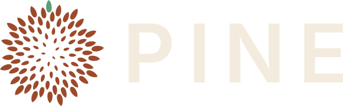
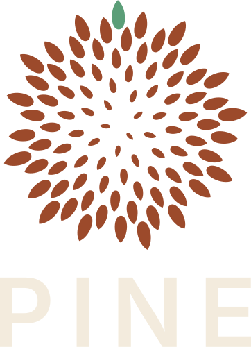
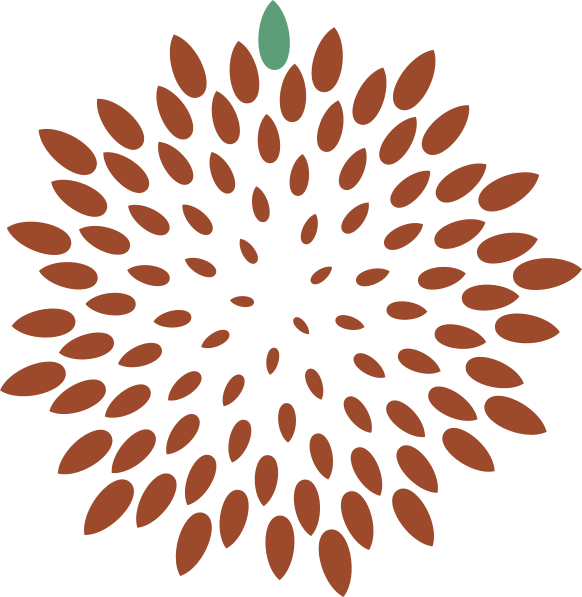
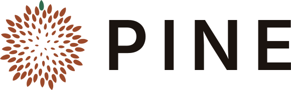
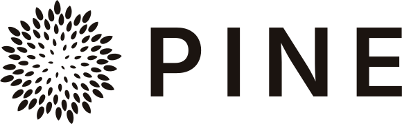
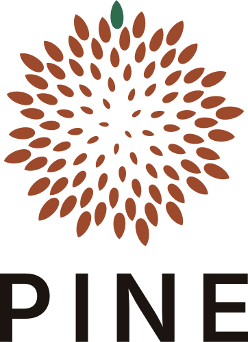

BrandkitConceito
A PINE entrega soluções digitais em dias, usando tecnologia e IA. A marca passa duas coisas ao mesmo tempo: a precisão da tecnologia e a confiança de quem tem raiz.
Uma pinha de araucária, a árvore de Curitiba, onde a PINE nasceu. Origem, semente, crescimento.
89 pinhões no ângulo áureo (137,5°), a mesma regra que a natureza usa numa pinha de verdade. Orgânica por fora, cálculo por dentro.
Um único pinhão é diferente: é o que acontece. Na comunicação, o verde aparece pouco e sempre com intenção.
Logo





Na versão horizontal, a pinha tem 1,8 vez a altura das maiúsculas. Respiro mínimo: a altura do "P". Não gire a pinha, não recolora pinhões e não mova o pinhão verde.
Cores
Fundo principal.
Texto sobre o escuro e fundo claro.
A pinha e destaques pontuais.
Acento. Um por tela. Sobre escuro: #5B9E78.
Tipografia
Tom de voz
Direta, confiante e curta, sem precisar convencer ninguém. Provoca curiosidade em vez de explicar.
| Diretos | Uma ideia por frase. Nada de jargão. |
| Confiantes | Afirmamos. Sem arrogância. |
| Elegantes | Menos é mais. Sem urgência falsa, sem "imperdível". |
| Seletivos | O santo precisa bater. A PINE não é pra todo mundo. |
Você pede. Acontece.
Se é digital, acontece.
A PINE não é pra todo mundo. E tudo bem.
Somos uma agência completa de soluções inovadoras!
Aproveite nossas condições especiais!
Pine, a sua software house.
PINE sempre em maiúsculas. Sem "agência", "software house" ou "service as software". Sem travessões. Sem preços.
Arquivos